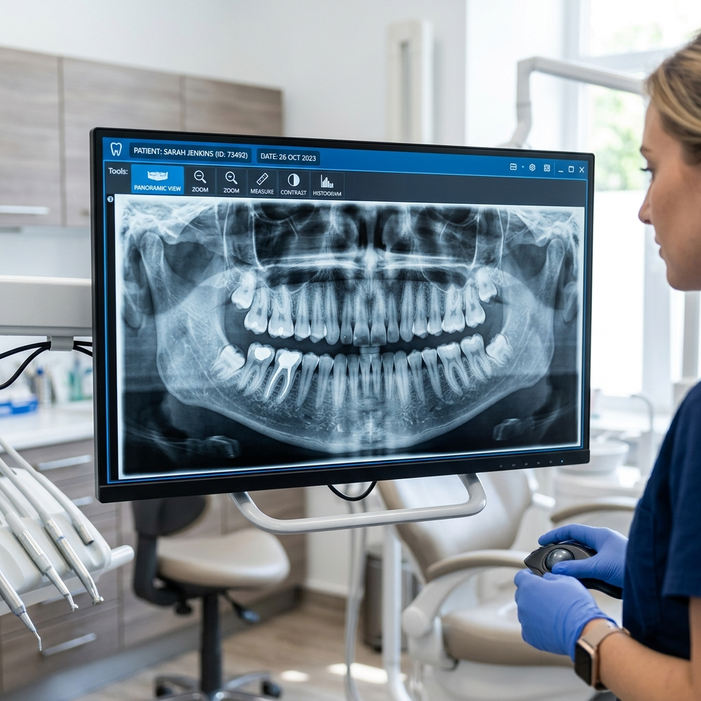
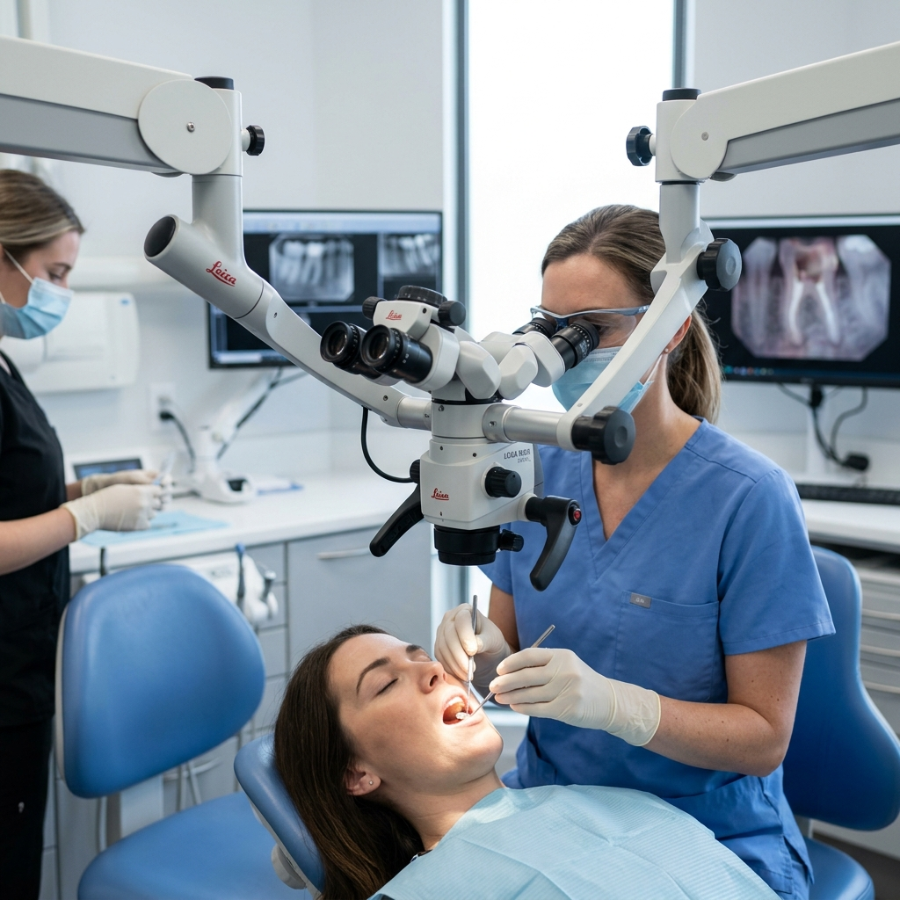
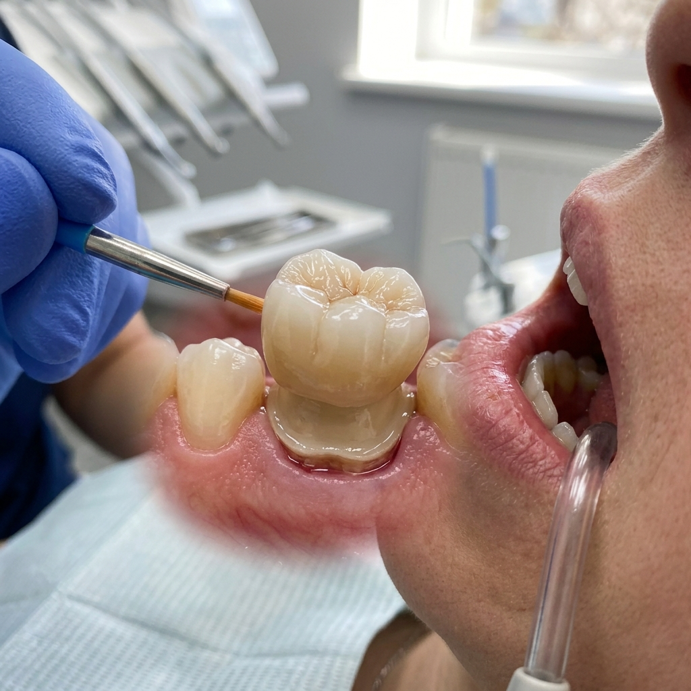

Don't let tooth pain hold you back. Save your natural tooth with our advanced, comfortable, and virtually pain-free root canal procedures.
Root Canal Treatment (RCT) is one of the most common and highly effective dental procedures used to save a damaged or infected tooth. Many people fear this treatment due to outdated myths about pain, but modern dentistry at Vijaya Dental & Implant Center has made root canal procedures safe, comfortable, and virtually pain-free.
Root Canal Treatment involves removing the infected or damaged pulp—the soft inner part of the tooth containing nerves and blood vessels. Once the infection is removed, the tooth is cleaned, disinfected, and sealed to prevent further damage. This helps save your natural tooth instead of resorting to extraction.
If you are searching for the best root canal treatment in Dammaiguda, Hyderabad, our expert endodontists use advanced technology to ensure a reliable and professional experience from start to finish.

High-definition diagnostics: We use digital X-rays to pinpoint the source of infection.
Recognizing these symptoms early can save your tooth and prevent a spreading infection.
Persistent tooth pain, especially while chewing or applying pressure, is a primary sign of pulp infection.
Pain that lingers after exposure to hot or cold temperatures long after the stimulus is removed.
Swollen, tender, or darkened gums near the painful tooth, often indicating an underlying abscess.

At Vijaya Dental, we use a structured and scientific approach to root canal treatment. Our use of microscopic endodontics and rotary tools ensures that every canal is thoroughly cleaned with microscopic precision.
Why a root canal is often better than a tooth extraction.
Saving your natural tooth should always be the first priority. Nothing functions quite as well as your original tooth structure. When you keep your tooth through RCT, you maintain your natural biting force and chewing efficiency. This prevents the adjacent teeth from shifting into the gap that would be created by an extraction.
Furthermore, an extraction leads to jawbone resorption over time. By keeping the tooth root in place, you stimulate the bone and maintain your natural facial contours. Root canal treatment is also often more cost-effective and requires fewer visits than the alternative of extraction followed by a dental implant or bridge.
Psychologically, keeping your natural smile is a huge boost. At Vijaya Dental, we use the latest bioceramic sealers that have higher success rates and faster healing times than traditional materials. Our goal is to ensure your "saved" tooth lasts a lifetime.
Modern endodontics is about more than just removing pain—it's about restoring health. A tooth saved by root canal treatment, followed by a high-quality protective crown, is as strong and functional as any other tooth in your mouth.
After a root canal, the tooth becomes more brittle because the blood supply has been removed. To prevent the tooth from fracturing under chewing pressure, we almost always recommend a protective crown.
At our Dammaiguda clinic, we offer premium porcelain and Zirconia crowns that are custom-milled to match your smile. This crown acts as a "helmet" for the tooth, sealing it from future bacterial invasion and restoring its full structural strength.
We use digital shade-matching technology to ensure your crown is indistinguishable from your natural teeth, completing your transformation with a beautiful, functional result.

No. With modern local anesthesia, the procedure is as comfortable as getting a standard filling. Most patients feel immediate relief from the toothache pain after the procedure.
In many cases, we can complete the treatment in a single visit. However, complex infections may require two visits to ensure the tooth is fully disinfected before sealing.
Yes, but you should wait until the numbness wears off to avoid biting your cheek. We recommend soft foods for the first 24 hours and avoiding chewing on the treated side until the permanent crown is placed.
The crown protects the tooth from cracking and provides a final seal against bacteria. Without a crown, a root-canal-treated tooth has a high risk of fracturing over time.
Extraction may seem easier, but it leads to bone loss and shifting teeth. Replacing a pulled tooth with an implant is much more expensive and time-consuming than saving it with a root canal.
With proper care and a good crown, a root-canal-treated tooth can last a lifetime, just like any other natural tooth.